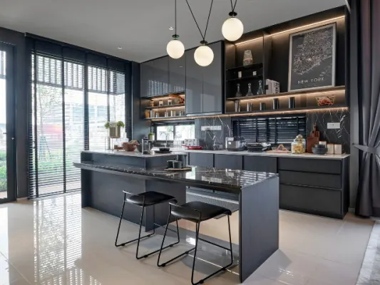
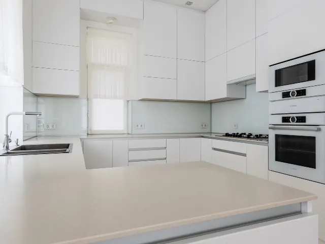

Partnerbijdrage
Een keuken waar je écht wilt koken? Zo pak je dat aan
Gepubliceerd op 20 mei 2025

Een goed ingerichte keuken is meer dan alleen een functionele ruimte. Het is de plek waar maaltijden worden bereid, gesprekken worden gevoerd en waar dagelijks geleefd wordt. Niet zo gek dus dat je maar al te graag het beste van het beste hiervoor in huis wilt halen. En daarom is het ook niet zo gek dat ook steeds meer mensen ervoor kiezen om hun keuken volledig af te stemmen op hun wensen en levensstijl. Heb je eenmaal een keuken waar je je prettig in voelt? Dan nodigt dit net even wat meer uit om vaker te koken en het maakt het bereiden van maaltijden vele malen leuker. Dus waar moet je dan allemaal aan denken als je een nieuw design uit gaat zoeken? We geven je alvast een dosis inspiratie in dit blog.
Praktische indeling is het begin; hier kun je allemaal aan denken
De basis van een fijne keuken ligt in een logische en praktische indeling. De driehoek tussen koelkast, spoelbak en kookplaat – ook wel de werkdriehoek genoemd – vormt het uitgangspunt voor een efficiënte workflow. Bij het (her)inrichten van een keuken is het belangrijk om goed na te denken over looproutes, opbergruimte en de plaatsing van apparatuur. Een goede voorbereiding voorkomt dat later concessies moeten worden gedaan. En dat is natuurlijk een erg fijne gedachte als je druk in de weer bent met het ontwerpen van de keuken van je dromen.
Inzicht in het kostenplaatje; waarom dit zo belangrijk is
Een belangrijke vraag tijdens je keukenrenovatie is natuurlijk: wat kost een nieuwe keuken? Wat de totale prijs gaat zijn? Dat kan sterk variëren, afhankelijk van:
- Het merk
- Het type werkblad
- De inbouwapparatuur
- De montage
Voor een eenvoudige basiskeuken moet gemiddeld rekening worden gehouden met een bedrag tussen de 5.000 en 10.000 euro. Luxere modellen met maatwerk, hoogwaardige apparatuur of exclusieve materialen kunnen aanzienlijk duurder uitvallen. Het is daarom verstandig om vooraf een helder budget vast te stellen en dit af te stemmen met de leverancier. Zo weet je zeker dat je niet voor vervelende momenten komt te staan.

Oriënteren op stijl en sfeer
Naast functionaliteit speelt ook uitstraling een grote rol. Of het nu gaat om een strakke, moderne keuken of een warme landelijke stijl. De sfeer moet natuurlijk helemaal passen bij het huis én jou als gebruiker in de keuken. Bij het samenstellen van een nieuwe keuken helpt het om wat inspiratie op te doen via woonmagazines, showrooms en online platforms. Plan je een keer bezoek aan een gespecialiseerde keukenwinkel – zoals een Keuken Kampioen keukenwinkel Nijmegen. Dit kan kan helpen bij het maken van keuzes in materialen en kleurgebruik. Hier is het vaak mogelijk om verschillende stijlen in het echt te ervaren. En dat draagt bij aan een beter beeld van de uiteindelijke inrichting.
Duurzaam en toekomstgericht; hier kun je allemaal aan denken
Duurzaamheid speelt een steeds grotere rol. Er is veel aandacht voor energiezuinige apparatuur en duurzame materialen. Denk bijvoorbeeld aan bamboe of gerecycled hout. Investeer je in kwaliteit? Dan kies je niet alleen voor comfort. Je draagt ook bij aan een milieubewuste woning. Bovendien loont het om bij de indeling al rekening te houden met toekomstige levensfasen, zoals vergrijzing of gezinsuitbreiding.
Deskundig advies in een keukenwinkel maakt het verschil
Bij het realiseren van een nieuwe keuken is deskundig advies vaak onmisbaar. Het loont om samen te werken met een ervaren keukenadviseur die meedenkt over zowel vormgeving als techniek. Denk aan aansluitpunten voor water en stroom, ventilatie, verlichting en ergonomie. Een goed uitgewerkt plan voorkomt verrassingen tijdens de uitvoering en leidt uiteindelijk tot een keuken waarin dagelijks met plezier wordt gekookt, gegeten en geleefd.
Aannemers en verbouw in Nijmegen
Zin om te beginnen? In onze bedrijvengids vind je alle 52 aannemers in Nijmegen, met openingstijden, kenmerken en een kaart.
Bekijk alle 52 aannemers in Nijmegen
Heb je zelf een aannemer? Laat je hier uitlichten.